TIGRAMITE¶
Tigramite is a causal time series analysis python package. It allows to efficiently reconstruct causal graphs from high-dimensional time series datasets and model the obtained causal dependencies for causal mediation and prediction analyses. Causal discovery is based on linear as well as non-parametric conditional independence tests applicable to discrete or continuously-valued time series. Also includes functions for high-quality plots of the results. Please cite the following papers depending on which method you use:
- J. Runge, S. Flaxman, D. Sejdinovic (2017): Detecting causal associations in large nonlinear time series datasets, https://arxiv.org/abs/1702.07007
- J. Runge et al. (2015): Identifying causal gateways and mediators in complex spatio-temporal systems. Nature Communications, 6, 8502. http://doi.org/10.1038/ncomms9502
- J. Runge (2015): Quantifying information transfer and mediation along causal pathways in complex systems. Phys. Rev. E, 92(6), 62829. http://doi.org/10.1103/PhysRevE.92.062829
- J. Runge, J. Heitzig, V. Petoukhov, and J. Kurths (2012): Escaping the Curse of Dimensionality in Estimating Multivariate Transfer Entropy. Physical Review Letters, 108(25), 258701. http://doi.org/10.1103/PhysRevLett.108.258701
tigramite.pcmci.PCMCI(dataframe, cond_ind_test) |
PCMCI causal discovery for time series datasets. |
tigramite.independence_tests.CondIndTest([...]) |
Base class of conditional independence tests. |
tigramite.independence_tests.ParCorr(**kwargs) |
Partial correlation test. |
tigramite.independence_tests.GP([...]) |
Gaussian processes base class. |
tigramite.independence_tests.GPACE([...]) |
GPACE conditional independence test based on Gaussian processes and maximal correlation. |
tigramite.independence_tests.GPDC([...]) |
GPDC conditional independence test based on Gaussian processes and distance correlation. |
tigramite.independence_tests.CMIknn([knn, ...]) |
Conditional mutual information test based on nearest-neighbor estimator. |
tigramite.independence_tests.CMIsymb([...]) |
Conditional mutual information test based on discrete estimator. |
tigramite.independence_tests.RCOT([num_f, ...]) |
Randomized Conditional Correlation Test. |
tigramite.data_processing |
Tigramite data processing functions. |
tigramite.models.Models(dataframe, model[, ...]) |
Base class for time series models. |
tigramite.models.LinearMediation(dataframe) |
Linear mediation analysis for time series models. |
tigramite.models.Prediction(dataframe, ...) |
Prediction class for time series models. |
tigramite.plotting |
Tigramite plotting package. |
tigramite.pcmci: PCMCI¶
-
class
tigramite.pcmci.PCMCI(dataframe, cond_ind_test, selected_variables=None, var_names=None, verbosity=0)[source]¶ PCMCI causal discovery for time series datasets.
PCMCI is a 2-step causal discovery method for large-scale time series datasets. The first step is a condition-selection followed by the MCI conditional independence test. The implementation is based on Algorithms 1 and 2 in [1].
PCMCI allows:
- different conditional independence test statistics adapted to continuously-valued or discrete data, and different assumptions about linear or nonlinear dependencies
- hyperparameter optimization
- easy parallelization
- handling of masked time series data
- false discovery control and confidence interval estimation
Notes

The PCMCI causal discovery method is comprehensively described in [1], where also analytical and numerical results are presented. Here we briefly summarize the method.
In the PCMCI framework, the dependency structure of a set of time series variables is represented in a time series graph as shown in the Figure. The nodes of a time series graph are defined as the variables at different times and a link exists if two lagged variables are not conditionally independent given the past of the whole process. Assuming stationarity, the links are repeated in time. The parents 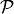 of a variable are defined as the set of all nodes with a link towards it (blue and red boxes in Figure). Estimating these parents directly by testing for conditional independence on the whole past is problematic due to high-dimensionality and because conditioning on irrelevant variables leads to biases [1].
PCMCI estimates causal links by a two-step procedure:
Condition-selection: For each variable 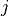, estimate a superset of parents 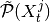 with the iterative PC1 algorithm , implemented as
run_pc_stable.Momentary conditional independence (MCI)
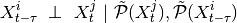
here implemented as
run_mci. The condition-selection step reduces the dimensionality and avoids conditioning on irrelevant variables.PCMCI can be flexibly combined with any kind of conditional independence test statistic adapted to the kind of data (continuous or discrete) and its assumed dependency structure. Currently, implemented in Tigramite are ParCorr as a linear test, GPACE allowing nonlinear additive dependencies, and CMI with different estimators making no assumptions about the dependencies. The classes in
tigramite.independence_testsalso handle masked data.The main free parameters of PCMCI (in addition to free parameters of the conditional independence test statistic) are the maximum time delay 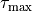 (
tau_max) and the significance threshold in the condition- selection step 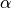 (pc_alpha). The maximum time delay depends on the application and should be chosen according to the maximum causal time lag expected in the complex system. We recommend a rather large choice that includes peaks in the lagged cross-correlation function (or a more general measure). should not be seen as a significance test level in the condition-selection step since the iterative hypothesis tests do not allow for a precise confidence level. rather takes the role of a regularization parameter in model-selection techniques. The conditioning sets should
include the true parents and at the same time be small in size to reduce the
estimation dimension of the MCI test and improve its power. But including
the true parents is typically more important. If a list of values is given
or
should
include the true parents and at the same time be small in size to reduce the
estimation dimension of the MCI test and improve its power. But including
the true parents is typically more important. If a list of values is given
or pc_alpha=None, is optimized using model selection criteria.Further optional parameters are discussed in [1].
References
[1] (1, 2, 3, 4, 5, 6, 7, 8, 9, 10, 11, 12, 13, 14, 15, 16, 17, 18, 19, 20, 21) J. Runge, D. Sejdinovic, S. Flaxman (2017): Detecting causal associations in large nonlinear time series datasets, https://arxiv.org/abs/1702.07007 Examples
>>> import numpy >>> from tigramite.pcmci import PCMCI >>> from tigramite.independence_tests import ParCorr >>> import tigramite.data_processing as pp >>> numpy.random.seed(42) >>> # Example process to play around with >>> # Each key refers to a variable and the incoming links are supplied as a >>> # list of format [((driver, lag), coeff), ...] >>> links_coeffs = {0: [((0, -1), 0.8)], 1: [((1, -1), 0.8), ((0, -1), 0.5)], 2: [((2, -1), 0.8), ((1, -2), -0.6)]} >>> data, _ = pp.var_process(links_coeffs, T=1000) >>> # Data must be array of shape (time, variables) >>> print data.shape (1000, 3) >>> dataframe = pp.DataFrame(data) >>> cond_ind_test = ParCorr() >>> pcmci = PCMCI(dataframe=dataframe, cond_ind_test=cond_ind_test) >>> results = pcmci.run_pcmci(tau_max=2, pc_alpha=None) >>> pcmci._print_significant_links(p_matrix=results['p_matrix'], val_matrix=results['val_matrix'], alpha_level=0.05) ## Significant parents at alpha = 0.05: Variable 0 has 1 parent(s): (0 -1): pval = 0.00000 | val = 0.623 Variable 1 has 2 parent(s): (1 -1): pval = 0.00000 | val = 0.601 (0 -1): pval = 0.00000 | val = 0.487 Variable 2 has 2 parent(s): (2 -1): pval = 0.00000 | val = 0.597 (1 -2): pval = 0.00000 | val = -0.511
Parameters: - dataframe (data object) – This is the Tigramite dataframe object. It has the attributes dataframe.values yielding a numpy array of shape (observations T, variables N) and optionally a mask of the same shape.
- cond_ind_test (conditional independence test object) –
This can be ParCorr or other classes from the tigramite package or an external test passed as a callable. This test can be based on the class tigramite.independence_tests.CondIndTest. If a callable is passed, it must have the signature:
class CondIndTest(): # with attributes # * measure : str # name of the test # * use_mask : bool # whether the mask should be used # and functions # * run_test(X, Y, Z, tau_max) : where X,Y,Z are of the form # X = [(var, -tau)] for non-negative integers var and tau # specifying the variable and time lag # return (test statistic value, p-value) # * set_dataframe(dataframe) : set dataframe object # optionally also # * get_model_selection_criterion(j, parents) : required if # pc_alpha parameter is to be optimized. Here j is the # variable index and parents a list [(var, -tau), ...] # return score for model selection # * get_confidence(X, Y, Z, tau_max) : required for # return_confidence=True # estimate confidence interval after run_test was called # return (lower bound, upper bound)
- selected_variables (list of integers, optional (default: range(N))) – Specify to estimate parents only for selected variables. If None is passed, parents are estimated for all variables.
- var_names (list of strings, optional (default: range(N))) – Names of variables, must match the number of variables. If None is passed, variables are enumerated as [0, 1, ...]
- verbosity (int, optional (default: 0)) – Verbose levels 0, 1, ...
-
all_parents¶ dictionary – Dictionary of form {0:[(0, -1), (3, -2), ...], 1:[], ...} containing the conditioning-parents estimated with PC algorithm.
-
val_min¶ dictionary – Dictionary of form val_min[j][(i, -tau)] = float containing the minimum test statistic value for each link estimated in the PC algorithm.
-
p_max¶ dictionary – Dictionary of form p_max[j][(i, -tau)] = float containing the maximum p-value for each link estimated in the PC algorithm.
-
iterations¶ dictionary – Dictionary containing further information on algorithm steps.
-
N¶ int – Number of variables.
-
T¶ int – Time series sample length.
-
get_corrected_pvalues(p_matrix, fdr_method='fdr_bh', exclude_contemporaneous=True)[source]¶ Returns p-values corrected for multiple testing.
Wrapper around statsmodels.sandbox.stats.multicomp.multipletests. Correction is performed either among all links if exclude_contemporaneous==False, or only among lagged links.
Parameters: - p_matrix (array-like) – Matrix of p-values. Must be of shape (N, N, tau_max + 1).
- fdr_method (str, optional (default: 'fdr_bh')) – Correction method, default is Benjamini-Hochberg False Discovery Rate method.
- exclude_contemporaneous (bool, optional (default: True)) – Whether to include contemporaneous links in correction.
Returns: q_matrix – Matrix of shape (N, N, tau_max + 1) containing corrected p-values.
Return type: array-like
-
get_lagged_dependencies(selected_links=None, tau_min=0, tau_max=1, parents=None, max_conds_py=None, max_conds_px=None)[source]¶ Returns matrix of lagged dependence measure values.
Parameters: - selected_links (dict or None) – Dictionary of form {0:[(0, -1), (3, -2), ...], 1:[], ...} specifying whether only selected links should be tested. If None is passed, all links are tested
- tau_min (int, default: 0) – Minimum time lag.
- tau_max (int, default: 1) – Maximum time lag. Must be larger or equal to tau_min.
- parents (dict or None) – Dictionary of form {0:[(0, -1), (3, -2), ...], 1:[], ...} specifying the conditions for each variable. If None is passed, no conditions are used.
- max_conds_py (int or None) – Maximum number of conditions of Y to use. If None is passed, this number is unrestricted.
- max_conds_px (int or None) – Maximum number of conditions of Z to use. If None is passed, this number is unrestricted.
Returns: val_matrix – The matrix of shape (N, N, tau_max+1) containing the lagged dependencies.
Return type: array
-
run_mci(selected_links=None, tau_min=1, tau_max=1, parents=None, max_conds_py=None, max_conds_px=None)[source]¶ MCI conditional independence tests.
Implements the MCI test (Algorithm 2 in [1]). Returns the matrices of test statistic values, p-values, and confidence intervals.
Parameters: - selected_links (dict or None) – Dictionary of form {0:all_parents (3, -2), ...], 1:[], ...} specifying whether only selected links should be tested. If None is passed, all links are tested
- tau_min (int, default: 1) – Minimum time lag to test. Note that zero-lags are undirected.
- tau_max (int, default: 1) – Maximum time lag. Must be larger or equal to tau_min.
- parents (dict or None) – Dictionary of form {0:[(0, -1), (3, -2), ...], 1:[], ...} specifying the conditions for each variable. If None is passed, no conditions are used.
- max_conds_py (int or None) – Maximum number of conditions of Y to use. If None is passed, this number is unrestricted.
- max_conds_px (int or None) – Maximum number of conditions of Z to use. If None is passed, this number is unrestricted.
Returns: results – {‘val_matrix’:val_matrix, ‘p_matrix’:p_matrix} are always returned and optionally conf_matrix which is of shape [N, N, tau_max+1,2]
Return type:
-
run_pc_stable(selected_links=None, tau_min=1, tau_max=1, save_iterations=False, pc_alpha=0.2, max_conds_dim=None, max_combinations=1)[source]¶ PC algorithm for estimating parents of all variables.
Parents are made available as self.all_parents
Parameters: - selected_links (dict or None) – Dictionary of form {0:[(0, -1), (3, -2), ...], 1:[], ...} specifying whether only selected links should be tested. If None is passed, all links are tested
- tau_min (int, default: 1) – Minimum time lag to test. Useful for multi-step ahead predictions. Must be greater zero.
- tau_max (int, default: 1) – Maximum time lag. Must be larger or equal to tau_min.
- save_iterations (bool, default: False) – Whether to save iteration step results such as conditions used.
- pc_alpha (float or list of floats, default: 0.3) – Significance level in algorithm. If a list or None is passed, the pc_alpha level is optimized for every variable across the given pc_alpha values using the score computed in cond_ind_test.get_model_selection_criterion()
- max_conds_dim (int or None) – Maximum number of conditions to test. If None is passed, this number is unrestricted.
- max_combinations (int, default: 1) – Maximum number of combinations of conditions of current cardinality to test. Defaults to 1 for PC_1 algorithm. For original PC algorithm a larger number, such as 10, can be used.
Returns: all_parents – Dictionary of form {0:[(0, -1), (3, -2), ...], 1:[], ...} containing estimated parents.
Return type: dict
-
run_pcmci(selected_links=None, tau_min=1, tau_max=1, save_iterations=False, pc_alpha=0.05, max_conds_dim=None, max_combinations=1, max_conds_py=None, max_conds_px=None, fdr_method='none')[source]¶ Run full PCMCI causal discovery for time series datasets.
Wrapper around PC-algorithm function and MCI function.
Parameters: - selected_links (dict or None) – Dictionary of form {0:all_parents (3, -2), ...], 1:[], ...} specifying whether only selected links should be tested. If None is passed, all links are tested
- tau_min (int, optional (default: 1)) – Minimum time lag to test. Note that zero-lags are undirected.
- tau_max (int, optional (default: 1)) – Maximum time lag. Must be larger or equal to tau_min.
- save_iterations (bool, optional (default: False)) – Whether to save iteration step results such as conditions used.
- pc_alpha (float, optional (default: 0.1)) – Significance level in algorithm.
- max_conds_dim (int, optional (default: None)) – Maximum number of conditions to test. If None is passed, this number is unrestricted.
- max_combinations (int, optional (default: 1)) – Maximum number of combinations of conditions of current cardinality to test. Defaults to 1 for PC_1 algorithm. For original PC algorithm a larger number, such as 10, can be used.
- max_conds_py (int, optional (default: None)) – Maximum number of conditions of Y to use. If None is passed, this number is unrestricted.
- max_conds_px (int, optional (default: None)) – Maximum number of conditions of Z to use. If None is passed, this number is unrestricted.
- fdr_method (str, optional (default: 'none')) – Correction method, default is Benjamini-Hochberg False Discovery Rate method.
Returns: results – {‘val_matrix’:val_matrix, ‘p_matrix’:p_matrix} are always returned and optionally q_matrix and conf_matrix which is of shape [N, N, tau_max+1,2]
Return type:
tigramite.independence_tests: Conditional independence tests¶
Base class:
-
class
tigramite.independence_tests.CondIndTest(use_mask=False, mask_type=None, significance='analytic', fixed_thres=0.1, sig_samples=1000, sig_blocklength=None, confidence=False, conf_lev=0.9, conf_samples=100, conf_blocklength=None, recycle_residuals=False, verbosity=0)[source]¶ Base class of conditional independence tests.
Provides useful general functions for different independence tests such as shuffle significance testing and bootstrap confidence estimation. Also handles masked samples. Other test classes can inherit from this class.
Parameters: - use_mask (bool, optional (default: False)) – Whether a supplied mask should be used.
- mask_type ({'y','x','z','xy','xz','yz','xyz'}) – Masking mode: Indicators for which variables in the dependence measure I(X; Y | Z) the samples should be masked. If None, ‘y’ is used, which excludes all time slices containing masked samples in Y. Explained in [1].
- significance (str, optional (default: 'analytic')) – Type of significance test to use. In this package ‘analytic’, ‘fixed_thres’ and ‘shuffle_test’ are available.
- fixed_thres (float, optional (default: 0.1)) – If significance is ‘fixed_thres’, this specifies the threshold for the absolute value of the dependence measure.
- sig_samples (int, optional (default: 1000)) – Number of samples for shuffle significance test.
- sig_blocklength (int, optional (default: None)) – Block length for block-shuffle significance test. If None, the block length is determined from the decay of the autocovariance as explained in [1].
- confidence (False or str, optional (default: False)) – Specify type of confidence estimation. If False, numpy.nan is returned. ‘bootstrap’ can be used with any test, for ParCorr also ‘analytic’ is implemented.
- conf_lev (float, optional (default: 0.9)) – Two-sided confidence interval.
- conf_samples (int, optional (default: 100)) – Number of samples for bootstrap.
- conf_blocklength (int, optional (default: None)) – Block length for block-bootstrap. If None, the block length is determined from the decay of the autocovariance as explained in [1].
- recycle_residuals (bool, optional (default: False)) – Specifies whether residuals should be stored. This may be faster, but can cost considerable memory.
- verbosity (int, optional (default: 0)) – Level of verbosity.
-
generate_and_save_nulldists(sample_sizes, null_dist_filename)[source]¶ Generates and saves null distribution for pairwise independence tests.
Generates the null distribution for different sample sizes. Calls generate_nulldist. Null dists are saved to disk as self.null_dist_filename.npz. Also adds the null distributions to self.null_dists.
Parameters: - sample_sizes (list) – List of sample sizes.
- null_dist_filename (str) – Name to save file containing null distributions.
-
generate_nulldist(df, add_to_null_dists=True)[source]¶ Generates null distribution for pairwise independence tests.
Generates the null distribution for sample size df. Assumes pairwise samples transformed to uniform marginals. Uses get_dependence_measure available in class and generates self.sig_samples random samples. Adds the null distributions to self.null_dists.
Parameters: - df (int) – Degrees of freedom / sample size to generate null distribution for.
- add_to_null_dists (bool, optional (default: True)) – Whether to add the null dist to the dictionary of null dists or just return it.
Returns: null_dist – Only returned,if add_to_null_dists is False.
Return type: array of shape [df,]
-
get_bootstrap_confidence(array, xyz, dependence_measure, conf_samples=100, conf_blocklength=None, conf_lev=0.95, verbosity=0)[source]¶ Perform bootstrap confidence interval estimation.
With conf_blocklength > 1 or None a block-bootstrap is performed.
Parameters: - array (array-like) – data array with X, Y, Z in rows and observations in columns
- xyz (array of ints) – XYZ identifier array of shape (dim,).
- dependence_measure (object) – Dependence measure function must be of form dependence_measure(array, xyz) and return a numeric value
- conf_lev (float, optional (default: 0.9)) – Two-sided confidence interval.
- conf_samples (int, optional (default: 100)) – Number of samples for bootstrap.
- conf_blocklength (int, optional (default: None)) – Block length for block-bootstrap. If None, the block length is determined from the decay of the autocovariance as explained in [1].
- verbosity (int, optional (default: 0)) – Level of verbosity.
Returns: (conf_lower, conf_upper) – Upper and lower confidence bound of confidence interval.
Return type: Tuple of floats
-
get_confidence(X, Y, Z=None, tau_max=0)[source]¶ Perform confidence interval estimation.
Calls the dependence measure and confidence test functions. The child classes can specify a function get_dependence_measure and get_analytic_confidence or get_bootstrap_confidence. If confidence is False, (numpy.nan, numpy.nan) is returned.
Parameters: - Y, Z (X,) – X,Y,Z are of the form [(var, -tau)], where var specifies the variable index and tau the time lag.
- tau_max (int, optional (default: 0)) – Maximum time lag. This may be used to make sure that estimates for different lags in X, Z, all have the same sample size.
Returns: (conf_lower, conf_upper) – Upper and lower confidence bound of confidence interval.
Return type: Tuple of floats
-
get_fixed_thres_significance(value, fixed_thres)[source]¶ Returns signficance for thresholding test.
Returns 0 if numpy.abs(value) is smaller than fixed_thres and 1 else.
Parameters: - value (number) – Value of test statistic for unshuffled estimate.
- fixed_thres (number) – Fixed threshold, is made positive.
Returns: pval – Returns 0 if numpy.abs(value) is smaller than fixed_thres and 1 else.
Return type: bool
-
get_measure(X, Y, Z=None, tau_max=0)[source]¶ Estimate dependence measure.
Calls the dependence measure function. The child classes must specify a function get_dependence_measure.
Parameters: - Y [, Z] (X,) – X,Y,Z are of the form [(var, -tau)], where var specifies the variable index and tau the time lag.
- tau_max (int, optional (default: 0)) – Maximum time lag. This may be used to make sure that estimates for different lags in X, Z, all have the same sample size.
Returns: val – The test statistic value.
Return type: float
-
run_test(X, Y, Z=None, tau_max=0)[source]¶ Perform conditional independence test.
Calls the dependence measure and signficicance test functions. The child classes must specify a function get_dependence_measure and either or both functions get_analytic_significance and get_shuffle_significance. If recycle_residuals is True, also _get_single_residuals must be available.
Parameters: - Y, Z (X,) – X,Y,Z are of the form [(var, -tau)], where var specifies the variable index and tau the time lag.
- tau_max (int, optional (default: 0)) – Maximum time lag. This may be used to make sure that estimates for different lags in X, Z, all have the same sample size.
Returns: val, pval – The test statistic value and the p-value. These are also made in the class as self.val and self.pval.
Return type: Tuple of floats
Test statistics:
-
class
tigramite.independence_tests.ParCorr(**kwargs)[source]¶ Partial correlation test.
Partial correlation is estimated through linear ordinary least squares (OLS) regression and a test for non-zero linear Pearson correlation on the residuals.
Notes
To test 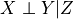, first 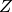 is regressed out from
 and 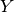 assuming the model
and 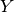 assuming the model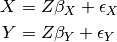
using OLS regression. Then the dependency of the residuals is tested with the Pearson correlation test.
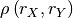
For the
significance='analytic'Student’s-t distribution with 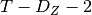 degrees of freedom is implemented.Parameters: **kwargs – Arguments passed on to Parent class CondIndTest. -
get_analytic_confidence(value, df, conf_lev)[source]¶ Returns analytic confidence interval for correlation coefficient.
Based on Student’s t-distribution.
Parameters: - value (float) – Test statistic value.
- df (int) – degrees of freedom of the test
- conf_lev (float) – Confidence interval, eg, 0.9
Returns: (conf_lower, conf_upper) – Upper and lower confidence bound of confidence interval.
Return type: Tuple of floats
-
get_analytic_significance(value, T, dim)[source]¶ Returns analytic p-value from Student’s t-test for the Pearson correlation coefficient.
Assumes two-sided correlation. If the degrees of freedom are less than 1, numpy.nan is returned.
Parameters: - value (float) – Test statistic value.
- T (int) – Sample length
- dim (int) – Dimensionality, ie, number of features.
Returns: pval – P-value.
Return type: float or numpy.nan
-
get_dependence_measure(array, xyz)[source]¶ Return partial correlation.
Estimated as the Pearson correlation of the residuals of a linear OLS regression.
Parameters: - array (array-like) – data array with X, Y, Z in rows and observations in columns
- xyz (array of ints) – XYZ identifier array of shape (dim,).
Returns: val – Partial correlation coefficient.
Return type: float
-
get_model_selection_criterion(j, parents, tau_max=0)[source]¶ Returns Akaike’s Information criterion modulo constants.
Fits a linear model of the parents to variable j and returns the score. I used to determine optimal hyperparameters in PCMCI, in particular the pc_alpha value.
Parameters: - j (int) – Index of target variable in data array.
- parents (list) – List of form [(0, -1), (3, -2), ...] containing parents.
- tau_max (int, optional (default: 0)) – Maximum time lag. This may be used to make sure that estimates for different lags in X, Z, all have the same sample size.
- Returns –
- score (float) – Model score.
-
get_shuffle_significance(array, xyz, value, return_null_dist=False)[source]¶ Returns p-value for shuffle significance test.
For residual-based test statistics only the residuals are shuffled.
Parameters: - array (array-like) – data array with X, Y, Z in rows and observations in columns
- xyz (array of ints) – XYZ identifier array of shape (dim,).
- value (number) – Value of test statistic for unshuffled estimate.
Returns: pval – p-value
Return type: float
-
-
class
tigramite.independence_tests.GP(gp_version='new', gp_params=None)[source]¶ Gaussian processes base class.
GP is estimated with scikit-learn and allows to flexibly specify kernels and hyperparameters or let them be optimized automatically. The kernel specifies the covariance function of the GP. Parameters can be passed on to
GaussianProcessRegressorusing the gp_params dictionary. If None is passed, the kernel ‘1.0 * RBF(1.0) + WhiteKernel()’ is used with alpha=0 as default. Note that the kernel’s hyperparameters are optimized during fitting.Parameters: - gp_version ({'new', 'old'}, optional (default: 'new')) – The older GP version from scikit-learn 0.17 was used for the numerical simulations in [1]. The newer version from scikit-learn 0.19 is faster and allows more flexibility regarding kernels etc.
- gp_params (dictionary, optional (default: None)) – Dictionary with parameters for
GaussianProcessRegressor.
-
get_model_selection_criterion(j, parents, tau_max=0)[source]¶ Returns log marginal likelihood for GP regression.
Fits a GP model of the parents to variable j and returns the negative log marginal likelihood as a model selection score. Is used to determine optimal hyperparameters in PCMCI, in particular the pc_alpha value.
Parameters: - j (int) – Index of target variable in data array.
- parents (list) – List of form [(0, -1), (3, -2), ...] containing parents.
- tau_max (int, optional (default: 0)) – Maximum time lag. This may be used to make sure that estimates for different lags in X, Z, all have the same sample size.
- Returns –
- score (float) – Model score.
-
class
tigramite.independence_tests.GPACE(null_dist_filename=None, gp_version='new', gp_params=None, ace_version='acepack', **kwargs)[source]¶ - GPACE conditional independence test based on Gaussian processes and
- maximal correlation.
GPACE is based on a Gaussian process (GP) regression and a maximal correlation test on the residuals. GP is estimated with scikit-learn and allows to flexibly specify kernels and hyperparameters or let them be optimized automatically. The maximal correlation test is implemented with the ACE estimator either from a pure python implementation (slow) or, if rpy is available, using the R-package ‘acepack’. Here the null distribution is not analytically available, but can be precomputed with the function generate_and_save_nulldists(...) which saves a *.npz file containing the null distribution for different sample sizes. This file can then be supplied as null_dist_filename.
Notes
As described in [1], GPACE is based on a Gaussian process (GP) regression and a maximal correlation test on the residuals. To test , first is regressed out from
and assuming the model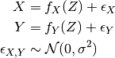
using GP regression. Here 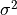 and the kernel bandwidth are optimzed using
sklearn. Then the residuals are transformed to uniform marginals yielding 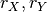 and their dependency is tested with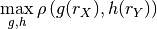
where 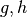 yielding maximal correlation are obtained using the Alternating Conditional Expectation (ACE) algorithm. The null distribution of the maximal correlation can be pre-computed.
Parameters: - null_dist_filename (str, otional (default: None)) – Path to file containing null distribution.
- gp_version ({'new', 'old'}, optional (default: 'new')) – The older GP version from scikit-learn 0.17 was used for the numerical simulations in [1]. The newer version from scikit-learn 0.19 is faster and allows more flexibility regarding kernels etc.
- gp_params (dictionary, optional (default: None)) – Dictionary with parameters for
GaussianProcessRegressor. - ace_version ({'python', 'acepack'}) – Estimator for ACE estimator of maximal correlation to use. ‘python’ loads the very slow pure python version available from https://pypi.python.org/pypi/ace/0.3. ‘acepack’ loads the much faster version from the R-package acepack. This requires the R-interface rpy2 to be installed and acepack needs to be installed in R beforehand. Note that both versions ‘python’ and ‘acepack’ may result in different results. In [1] the acepack version was used.
- **kwargs – Arguments passed on to parent class CondIndTest.
-
get_analytic_significance(value, T, dim)[source]¶ Returns p-value for the maximal correlation coefficient.
The null distribution for necessary degrees of freedom (df) is loaded. If not available, the null distribution is generated with the function generate_nulldist(). It can be precomputed with the function generate_and_save_nulldists(...) which saves a *.npz file containing the null distribution for different sample sizes. This file can then be supplied as null_dist_filename. The maximal correlation coefficient is one-sided. If the degrees of freedom are less than 1, numpy.nan is returned.
Parameters: - value (float) – Test statistic value.
- T (int) – Sample length
- dim (int) – Dimensionality, ie, number of features.
Returns: pval – P-value.
Return type: float or numpy.nan
-
get_dependence_measure(array, xyz)[source]¶ Return GPACE measure.
Estimated as the maximal correlation of the residuals of a GP regression.
Parameters: - array (array-like) – data array with X, Y, Z in rows and observations in columns
- xyz (array of ints) – XYZ identifier array of shape (dim,).
Returns: val – GPACE test statistic.
Return type: float
-
get_shuffle_significance(array, xyz, value, return_null_dist=False)[source]¶ Returns p-value for shuffle significance test.
For residual-based test statistics only the residuals are shuffled.
Parameters: - array (array-like) – data array with X, Y, Z in rows and observations in columns
- xyz (array of ints) – XYZ identifier array of shape (dim,).
- value (number) – Value of test statistic for unshuffled estimate.
Returns: pval – p-value
Return type: float
-
class
tigramite.independence_tests.GPDC(null_dist_filename=None, gp_version='new', gp_params=None, **kwargs)[source]¶ - GPDC conditional independence test based on Gaussian processes and
- distance correlation.
GPDC is based on a Gaussian process (GP) regression and a distance correlation test on the residuals [2]. GP is estimated with scikit-learn and allows to flexibly specify kernels and hyperparameters or let them be optimized automatically. The distance correlation test is implemented with cython. Here the null distribution is not analytically available, but can be precomputed with the function generate_and_save_nulldists(...) which saves a *.npz file containing the null distribution for different sample sizes. This file can then be supplied as null_dist_filename.
Notes
GPDC is based on a Gaussian process (GP) regression and a distance correlation test on the residuals. Distance correlation is described in [2]. To test , first is regressed out from
and assuming the modelusing GP regression. Here and the kernel bandwidth are optimzed using
sklearn. Then the residuals are transformed to uniform marginals yielding and their dependency is tested with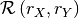
The null distribution of the distance correlation should be pre-computed. Otherwise it is computed during runtime.
The cython-code for distance correlation is Copyright (c) 2012, Florian Finkernagel (https://gist.github.com/ffinkernagel/2960386).
References
[2] (1, 2) Gabor J. Szekely, Maria L. Rizzo, and Nail K. Bakirov: Measuring and testing dependence by correlation of distances, https://arxiv.org/abs/0803.4101 Parameters: - null_dist_filename (str, otional (default: None)) – Path to file containing null distribution.
- gp_version ({'new', 'old'}, optional (default: 'new')) – The older GP version from scikit-learn 0.17 was used for the numerical simulations in [1]. The newer version from scikit-learn 0.19 is faster and allows more flexibility regarding kernels etc.
- gp_params (dictionary, optional (default: None)) – Dictionary with parameters for
GaussianProcessRegressor. - **kwargs – Arguments passed on to parent class CondIndTest.
-
get_analytic_significance(value, T, dim)[source]¶ Returns p-value for the distance correlation coefficient.
The null distribution for necessary degrees of freedom (df) is loaded. If not available, the null distribution is generated with the function generate_nulldist(). It is recommended to generate the nulldists for a wide range of sample sizes beforehand with the function generate_and_save_nulldists(...). The distance correlation coefficient is one-sided. If the degrees of freedom are less than 1, numpy.nan is returned.
Parameters: - value (float) – Test statistic value.
- T (int) – Sample length
- dim (int) – Dimensionality, ie, number of features.
Returns: pval – P-value.
Return type: float or numpy.nan
-
get_dependence_measure(array, xyz)[source]¶ Return GPDC measure.
Estimated as the distance correlation of the residuals of a GP regression.
Parameters: - array (array-like) – data array with X, Y, Z in rows and observations in columns
- xyz (array of ints) – XYZ identifier array of shape (dim,).
Returns: val – GPDC test statistic.
Return type: float
-
get_shuffle_significance(array, xyz, value, return_null_dist=False)[source]¶ Returns p-value for shuffle significance test.
For residual-based test statistics only the residuals are shuffled.
Parameters: - array (array-like) – data array with X, Y, Z in rows and observations in columns
- xyz (array of ints) – XYZ identifier array of shape (dim,).
- value (number) – Value of test statistic for unshuffled estimate.
Returns: pval – p-value
Return type: float
-
class
tigramite.independence_tests.CMIknn(knn=0.2, shuffle_neighbors=5, significance='shuffle_test', transform='standardize', **kwargs)[source]¶ Conditional mutual information test based on nearest-neighbor estimator.
Conditional mutual information is the most general dependency measure coming from an information-theoretic framework. It makes no assumptions about the parametric form of the dependencies by directly estimating the underlying joint density. The test here is based on the estimator in S. Frenzel and B. Pompe, Phys. Rev. Lett. 99, 204101 (2007), combined with a shuffle test to generate the distribution under the null hypothesis of independence first used in [3]. The knn-estimator is suitable only for variables taking a continuous range of values. For discrete variables use the CMIsymb class.
Notes
CMI is given by
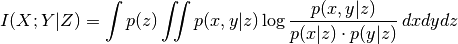
Its knn-estimator is given by
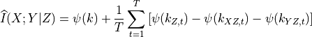
where 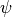 is the Digamma function. This estimator has as a parameter the number of nearest-neighbors 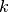 which determines the size of hyper-cubes around each (high-dimensional) sample point. Then 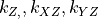 are the numbers of neighbors in the respective subspaces.
can be viewed as a density smoothing parameter (although it is data-adaptive unlike fixed-bandwidth estimators). For large , the underlying dependencies are more smoothed and CMI has a larger bias, but lower variance, which is more important for significance testing. Note that the estimated CMI values can be slightly negative while CMI is a non- negative quantity.
This class requires the scipy.spatial.cKDTree package and the tigramite cython module.
References
[3] J. Runge, J. Heitzig, V. Petoukhov, and J. Kurths: Escaping the Curse of Dimensionality in Estimating Multivariate Transfer Entropy. Physical Review Letters, 108(25), 258701. http://doi.org/10.1103/PhysRevLett.108.258701 Parameters: - knn (int or float, optional (default: 0.2)) – Number of nearest-neighbors which determines the size of hyper-cubes around each (high-dimensional) sample point. If smaller than 1, this is computed as a fraction of T, hence knn=knn*T. For knn larger or equal to 1, this is the absolute number.
- shuffle_neighbors (int, optional (default: 10)) – Number of nearest-neighbors within Z for the shuffle surrogates which determines the size of hyper-cubes around each (high-dimensional) sample point.
- transform ({'standardize', 'ranks', 'uniform', False}, optional) – (default: ‘standardize’) Whether to transform the array beforehand by standardizing or transforming to uniform marginals.
- significance (str, optional (default: 'shuffle_test')) – Type of significance test to use. For CMIknn only ‘fixed_thres’ and ‘shuffle_test’ are available.
- **kwargs – Arguments passed on to parent class CondIndTest.
-
get_dependence_measure(array, xyz)[source]¶ Returns CMI estimate as described in Frenzel and Pompe PRL (2007).
Parameters: - array (array-like) – data array with X, Y, Z in rows and observations in columns
- xyz (array of ints) – XYZ identifier array of shape (dim,).
Returns: val – Conditional mutual information estimate.
Return type: float
-
get_shuffle_significance(array, xyz, value, return_null_dist=False)[source]¶ Returns p-value for nearest-neighbor shuffle significance test.
For non-empty Z, overwrites get_shuffle_significance from the parent class which is a block shuffle test, which does not preserve dependencies of X and Y with Z. Here the parameter shuffle_neighbors is used to permute only those values 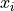 and 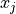 for which 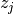 is among the nearest niehgbors of 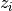. If Z is empty, the block-shuffle test is used.
Parameters: - array (array-like) – data array with X, Y, Z in rows and observations in columns
- xyz (array of ints) – XYZ identifier array of shape (dim,).
- value (number) – Value of test statistic for unshuffled estimate.
Returns: pval – p-value
Return type: float
-
class
tigramite.independence_tests.CMIsymb(n_symbs=None, significance='shuffle_test', sig_blocklength=1, conf_blocklength=1, **kwargs)[source]¶ Conditional mutual information test based on discrete estimator.
Conditional mutual information is the most general dependency measure coming from an information-theoretic framework. It makes no assumptions about the parametric form of the dependencies by directly estimating the underlying joint density. The test here is based on directly estimating the joint distribution assuming symbolic input, combined with a shuffle test to generate the distribution under the null hypothesis of independence. The knn-estimator is suitable only for discrete variables. For continuous variables, either pre-process the data using the functions in data_processing or use the CMIknn class.
Notes
CMI and its estimator are given by
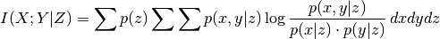
Parameters: - n_symbs (int, optional (default: None)) – Number of symbols in input data. If None, n_symbs=data.max()+1
- significance (str, optional (default: 'shuffle_test')) – Type of significance test to use. For CMIsymb only ‘fixed_thres’ and ‘shuffle_test’ are available.
- sig_blocklength (int, optional (default: 1)) – Block length for block-shuffle significance test.
- conf_blocklength (int, optional (default: 1)) – Block length for block-bootstrap.
- **kwargs – Arguments passed on to parent class CondIndTest.
-
get_dependence_measure(array, xyz)[source]¶ Returns CMI estimate based on bincount histogram.
Parameters: - array (array-like) – data array with X, Y, Z in rows and observations in columns
- xyz (array of ints) – XYZ identifier array of shape (dim,).
Returns: val – Conditional mutual information estimate.
Return type: float
-
get_shuffle_significance(array, xyz, value, return_null_dist=False)[source]¶ Returns p-value for shuffle significance test.
For residual-based test statistics only the residuals are shuffled.
Parameters: - array (array-like) – data array with X, Y, Z in rows and observations in columns
- xyz (array of ints) – XYZ identifier array of shape (dim,).
- value (number) – Value of test statistic for unshuffled estimate.
Returns: pval – p-value
Return type: float
-
class
tigramite.independence_tests.RCOT(num_f=25, approx='lpd4', seed=42, significance='analytic', **kwargs)[source]¶ Randomized Conditional Correlation Test.
Tests conditional independence in the fully non-parametric setting based on Kernel measures. For not too small sample sizes, the test can utilize an analytic approximation of the null distribution making it very fast. Based on r-package
rcit. This test is described in [5].Notes
RCOT is a fast variant of the Kernel Conditional Independence Test (KCIT) utilizing random Fourier features. Kernel tests measure conditional independence in the fully non-parametric setting. In practice, RCOT tests scale linearly with sample size and return accurate p-values much faster than KCIT in the large sample size context. To use the analytical null approximation, the sample size should be at least ~1000.
The method is fully described in [5] and the r-package documentation. The free parameters are the approximation of the partial kernel cross-covariance matrix and the number of random fourier features for the conditioning set. One caveat is that RCOT is, as the name suggests, based on random fourier features. To get reproducable results, you should fix the seed (default).
This class requires the rpy package and the prior installation of
rcitfrom https://github.com/ericstrobl/RCIT.References
[5] (1, 2) Eric V. Strobl, Kun Zhang, Shyam Visweswaran: Approximate Kernel-based Conditional Independence Tests for Fast Non- Parametric Causal Discovery. https://arxiv.org/abs/1702.03877 Parameters: - num_f (int, optional) – Number of random fourier features for conditioning set. More features better approximate highly structured joint densities, but take more computational time.
- approx (str, optional) – Which approximation of the partial cross-covariance matrix, options: ‘lpd4’ the Lindsay-Pilla-Basak method (default), ‘gamma’ for the Satterthwaite-Welch method, ‘hbe’ for the Hall-Buckley-Eagleson method, ‘chi2’ for a normalized chi-squared statistic, ‘perm’ for permutation testing (warning: this one is slow).
- seed (int or None, optional) – Which random fourier feature seed to use. If None, you won’t get reproducable results.
- significance (str, optional (default: 'analytic')) – Type of significance test to use.
- **kwargs – Arguments passed on to parent class CondIndTest.
-
get_analytic_significance(**args)[source]¶ Returns analytic p-value from RCIT test statistic.
Returns: pval – P-value. Return type: float or numpy.nan
-
get_dependence_measure(array, xyz)[source]¶ Returns RCOT estimate.
Parameters: - array (array-like) – data array with X, Y, Z in rows and observations in columns
- xyz (array of ints) – XYZ identifier array of shape (dim,).
Returns: val – RCOT estimate.
Return type: float
-
get_shuffle_significance(array, xyz, value, return_null_dist=False)[source]¶ Returns p-value for shuffle significance test.
For residual-based test statistics only the residuals are shuffled.
Parameters: - array (array-like) – data array with X, Y, Z in rows and observations in columns
- xyz (array of ints) – XYZ identifier array of shape (dim,).
- value (number) – Value of test statistic for unshuffled estimate.
Returns: pval – p-value
Return type: float
tigramite.data_processing: Data processing functions¶
Tigramite data processing functions.
-
class
tigramite.data_processing.DataFrame(data, mask=None, missing_flag=None)[source]¶ Data object containing time series array and optional mask.
Alternatively, a panda dataframe can be used.
Parameters: - data (array-like) – Numpy array of shape (observations T, variables N)
- mask (array-like, optional (default: None)) – Optional mask array, must be of same shape as data
-
data¶ array-like – Numpy array of shape (observations T, variables N)
-
mask¶ array-like, optional (default: None) – Optional mask array, must be of same shape as data
-
tigramite.data_processing.lowhighpass_filter(data, cutperiod, pass_periods='low')[source]¶ Butterworth low- or high pass filter.
This function applies a linear filter twice, once forward and once backwards. The combined filter has linear phase.
Parameters: - data (array) – Data array of shape (time, variables).
- cutperiod (int) – Period of cutoff.
- pass_periods (str, optional (default: 'low')) – Either ‘low’ or ‘high’ to act as a low- or high-pass filter
Returns: data – Filtered data array.
Return type: array
-
tigramite.data_processing.ordinal_patt_array(array, array_mask=None, dim=2, step=1, weights=False, verbosity=0)[source]¶ Returns symbolified array of ordinal patterns.
Each data vector (X_t, ..., X_t+(dim-1)*step) is converted to its rank vector. E.g., (0.2, -.6, 1.2) –> (1,0,2) which is then assigned to a unique integer (see Article). There are faculty(dim) possible rank vectors.
Note that the symb_array is step*(dim-1) shorter than the original array!
Reference: B. Pompe and J. Runge (2011). Momentary information transfer as a coupling measure of time series. Phys. Rev. E, 83(5), 1-12. doi:10.1103/PhysRevE.83.051122
Parameters: - array (array-like) – Data array of shape (time, variables).
- array_mask (bool array) – Data mask where True labels masked samples.
- dim (int, optional (default: 2)) – Pattern dimension
- step (int, optional (default: 1)) – Delay of pattern embedding vector.
- weights (bool, optional (default: False)) – Whether to return array of variances of embedding vectors as weights.
- verbosity (int, optional (default: 0)) – Level of verbosity.
Returns: patt, patt_mask [, patt_time] – Tuple of converted pattern array and new length
Return type: tuple of arrays
-
tigramite.data_processing.quantile_bin_array(data, bins=6)[source]¶ Returns symbolified array with equal-quantile binning.
Parameters: - data (array) – Data array of shape (time, variables).
- bins (int, optional (default: 6)) – Number of bins.
Returns: symb_array – Converted data of integer type.
Return type: array
-
tigramite.data_processing.smooth(data, smooth_width, kernel='gaussian', mask=None, residuals=False)[source]¶ Returns either smoothed time series or its residuals.
the difference between the original and the smoothed time series (=residuals) of a kernel smoothing with gaussian (smoothing kernel width = twice the sigma!) or heaviside window, equivalent to a running mean.
Assumes data of shape (T, N) or (T,) :rtype: array :returns: smoothed/residual data
Parameters: - data (array) – Data array of shape (time, variables).
- smooth_width (float) – Window width of smoothing, 2*sigma for a gaussian.
- kernel (str, optional (default: 'gaussian')) – Smoothing kernel, ‘gaussian’ or ‘heaviside’ for a running mean.
- mask (bool array, optional (default: None)) – Data mask where True labels masked samples.
- residuals (bool, optional (default: False)) – True if residuals should be returned instead of smoothed data.
Returns: data – Smoothed/residual data.
Return type: array-like
-
tigramite.data_processing.time_bin_with_mask(data, time_bin_length, sample_selector=None)[source]¶ Returns time binned data where only about non-masked values is averaged.
Parameters: - data (array) – Data array of shape (time, variables).
- time_bin_length (int) – Length of time bin.
- mask (bool array, optional (default: None)) – Data mask where True labels masked samples.
Returns: (bindata, T) – Tuple of time-binned data array and new length of array.
Return type: tuple of array and int
-
tigramite.data_processing.var_process(parents_neighbors_coeffs, T=1000, use='inv_inno_cov', verbosity=0)[source]¶ Returns a vector-autoregressive process with correlated innovations.
Wrapper around var_network with more user-friendly input options.
Parameters: - parents_neighbors_coeffs (dict) – Dictionary of format {..., j:[((var1, lag1), coeff), ...], ...} for all variables where vars must be in [0..N-1] and lags <= 0 with number of variables N. Coeff refers to the coefficient in the linear model. If lag=0, a nonzero value in the covariance matrix (or its inverse) is implied. These should be the same for (i, j) and (j, i).
- use (str, optional (default: 'inv_inno_cov')) – Specifier, either ‘inno_cov’ or ‘inv_inno_cov’. If ‘inno_cov’, lag=0 entries in parents_neighbors_coeffs are interpreted as entries of the innovation noise term’s covariance matrix. I ‘inv_inno_cov’, they are interpreted as entries in the inverse covariance matrix.
- T (int, optional (default: 1000)) – Sample size.
- verbosity (int, optional (default: 0)) – Level of verbosity.
Returns: - X (array-like) – Array of realization.
- true_parents_neighbors (dict) – Dictionary of true parents and neighbors
-
tigramite.data_processing.weighted_avg_and_std(values, axis, weights)[source]¶ Returns the weighted average and standard deviation.
Parameters: - values (array) – Data array of shape (time, variables).
- axis (int) – Axis to average/std about
- weights (array) – Weight array of shape (time, variables).
Returns: (average, std) – Tuple of weighted average and standard deviation along axis.
Return type: tuple of arrays
tigramite.models: Time series modeling, mediation, and prediction¶
Base class:
-
class
tigramite.models.Models(dataframe, model, model_params=None, data_transform=None, use_mask=False, mask_type=None, missing_flag=None, verbosity=0)[source]¶ Base class for time series models.
Allows to fit any model from sklearn to the parents of a target variable. Also takes care of missing values, masking and preprocessing.
Parameters: - dataframe (data object) – Tigramite dataframe object. It must have the attributes dataframe.values yielding a numpy array of shape (observations T, variables N) and optionally a mask of the same shape and a missing values flag.
- model (sklearn model object) – For example, sklearn.linear_model.LinearRegression for a linear regression model.
- model_params (dictionary, optional (default: None)) – Optional parameters passed on to sklearn model
- data_transform (sklearn preprocessing object, optional (default: None)) – Used to transform data prior to fitting. For example, sklearn.preprocessing.StandardScaler for simple standardization. The fitted parameters are stored.
- use_mask (bool, optional (default: False)) – Whether a supplied mask should be used.
- mask_type ({'y','x','z','xy','xz','yz','xyz'}) – Masking mode: Indicators for which variables in the dependence measure I(X; Y | Z) the samples should be masked. If None, ‘y’ is used, which excludes all time slices containing masked samples in Y. Explained in [1].
- missing_flag (number, optional (default: None)) – Flag for missing values. Dismisses all time slices of samples where missing values occur in any variable and also flags samples for all lags up to 2*tau_max. This avoids biases, see section on masking in Supplement of [1].
- verbosity (int, optional (default: 0)) – Level of verbosity.
-
get_coefs()[source]¶ Returns dictionary of coefficients for linear models.
Only for models from sklearn.linear_model
Returns: coeffs – Dictionary of dictionaries for each variable with keys given by the parents and the regression coefficients as values. Return type: dictionary
-
get_fit(all_parents, selected_variables=None, tau_max=None, cut_off='max_lag_or_tau_max', return_data=False)[source]¶ Fit time series model.
To each variable in selected_variables, the sklearn model is fitted with 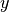 given by the target variable, and
given by its
parents. The fitted model class is returned for later use.Parameters: - all_parents (dictionary) – Dictionary of form {0:[(0, -1), (3, -2), ...], 1:[], ...} containing the parents estimated with PCMCI.
- selected_variables (list of integers, optional (default: range(N))) – Specify to estimate parents only for selected variables. If None is passed, parents are estimated for all variables.
- tau_max (int, optional (default: None)) – Maximum time lag. If None, the maximum lag in all_parents is used.
- cut_off ({'2xtau_max', 'max_lag', 'max_lag_or_tau_max'}) – How many samples to cutoff at the beginning. The default is ‘2xtau_max’, which guarantees that MCI tests are all conducted on the same samples. For modeling, ‘max_lag_or_tau_max’ can be used, which uses the maximum of tau_max and the conditions, which is useful to compare multiple models on the same sample. Last, ‘max_lag’ uses as much samples as possible.
- return_data (bool, optional (default: False)) – Whether to save the data array.
Returns: fit_results – Returns the sklearn model after fitting. Also returns the data transformation parameters.
Return type: dictionary of sklearn model objects for each variable
Derived classes:
-
class
tigramite.models.LinearMediation(dataframe, model_params=None, data_transform=None, use_mask=False, mask_type=None, missing_flag=None, verbosity=0)[source]¶ Linear mediation analysis for time series models.
Fits linear model to parents and provides functions to return measures such as causal effect, mediated causal effect, average causal effect, etc. as described in [4].
Notes
This class implements the following causal mediation measures introduced in [4]:
- causal effect (CE)
- mediated causal effect (MCE)
- average causal effect (ACE)
- average causal susceptibility (ACS)
- average mediated causal effect (AMCE)
Consider a simple model of a causal chain as given in the Example with
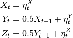
Here the link coefficient of 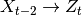 is zero while the causal effect is 0.25. MCE through is 0.25 implying that all of the the CE is explained by . ACE from
is 0.37 since it
has CE 0.5 on and 0.25 on .Examples
>>> numpy.random.seed(42) >>> links_coeffs = {0: [], 1: [((0, -1), 0.5)], 2: [((1, -1), 0.5)]} >>> data, true_parents = pp.var_process(links_coeffs, T=1000) >>> dataframe = pp.DataFrame(data) >>> med = LinearMediation(dataframe=dataframe) >>> med.fit_model(all_parents=true_parents, tau_max=3) >>> print "Link coefficient (0, -2) --> 2: ", med.get_coeff(i=0, tau=-2, j=2) >>> print "Causal effect (0, -2) --> 2: ", med.get_ce(i=0, tau=-2, j=2) >>> print "Mediated Causal effect (0, -2) --> 2 through 1: ", med.get_mce(i=0, tau=-2, j=2, k=1) >>> print "Average Causal Effect: ", med.get_all_ace() >>> print "Average Causal Susceptibility: ", med.get_all_acs() >>> print "Average Mediated Causal Effect: ", med.get_all_amce() Link coefficient (0, -2) --> 2: 0.0 Causal effect (0, -2) --> 2: 0.250648072987 Mediated Causal effect (0, -2) --> 2 through 1: 0.250648072987 Average Causal Effect: [ 0.36897445 0.25718002 0. ] Average Causal Susceptibility: [ 0. 0.24365041 0.38250406] Average Mediated Causal Effect: [ 0. 0.12532404 0. ]
References
[4] (1, 2, 3) J. Runge et al. (2015): Identifying causal gateways and mediators in complex spatio-temporal systems. Nature Communications, 6, 8502. http://doi.org/10.1038/ncomms9502 Parameters: - dataframe (data object) – Tigramite dataframe object. It must have the attributes dataframe.values yielding a numpy array of shape (observations T, variables N) and optionally a mask of the same shape and a missing values flag.
- model_params (dictionary, optional (default: None)) – Optional parameters passed on to sklearn model
- data_transform (sklearn preprocessing object, optional (default: None)) – Used to transform data prior to fitting. For example, sklearn.preprocessing.StandardScaler for simple standardization. The fitted parameters are stored.
- use_mask (bool, optional (default: False)) – Whether a supplied mask should be used.
- mask_type ({'y','x','z','xy','xz','yz','xyz'}) – Masking mode: Indicators for which variables in the dependence measure I(X; Y | Z) the samples should be masked. If None, ‘y’ is used, which excludes all time slices containing masked samples in Y. Explained in [1].
- missing_flag (number, optional (default: None)) – Flag for missing values. Dismisses all time slices of samples where missing values occur in any variable and also flags samples for all lags up to 2*tau_max. This avoids biases, see section on masking in Supplement of [1].
- verbosity (int, optional (default: 0)) – Level of verbosity.
-
fit_model(all_parents, tau_max=None)[source]¶ Fit linear time series model.
Fits a sklearn.linear_model.LinearRegression model to the parents of each variable and computes the coefficient matrices 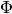 and 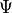 as described in [4].
Parameters: - all_parents (dictionary) – Dictionary of form {0:[(0, -1), (3, -2), ...], 1:[], ...} containing the parents estimated with PCMCI.
- tau_max (int, optional (default: None)) – Maximum time lag. If None, the maximum lag in all_parents is used.
-
get_ace(i, lag_mode='absmax', exclude_i=True)[source]¶ Returns the average causal effect.
This is the average causal effect (ACE) emanating from variable i to any other variable. With lag_mode=’absmax’ this is based on the lag of maximum CE for each pair.
Parameters: - i (int) – Index of cause variable.
- lag_mode ({'absmax', 'all_lags'}) – Lag mode. Either average across all lags between each pair or only at the lag of maximum absolute causal effect.
- exclude_i (bool, optional (default: True)) – Whether to exclude causal effects on the variable itself at later lags.
Returns: ace – Average Causal Effect.
Return type: float
-
get_acs(j, lag_mode='absmax', exclude_j=True)[source]¶ Returns the average causal susceptibility.
This is the Average Causal Susceptibility (ACS) affecting a variable j from any other variable. With lag_mode=’absmax’ this is based on the lag of maximum CE for each pair.
Parameters: - j (int) – Index of variable.
- lag_mode ({'absmax', 'all_lags'}) – Lag mode. Either average across all lags between each pair or only at the lag of maximum absolute causal effect.
- exclude_j (bool, optional (default: True)) – Whether to exclude causal effects on the variable itself at previous lags.
Returns: acs – Average Causal Susceptibility.
Return type: float
-
get_all_ace(lag_mode='absmax', exclude_i=True)[source]¶ Returns the average causal effect for all variables.
This is the average causal effect (ACE) emanating from variable i to any other variable. With lag_mode=’absmax’ this is based on the lag of maximum CE for each pair.
Parameters: - lag_mode ({'absmax', 'all_lags'}) – Lag mode. Either average across all lags between each pair or only at the lag of maximum absolute causal effect.
- exclude_i (bool, optional (default: True)) – Whether to exclude causal effects on the variable itself at later lags.
Returns: ace – Average Causal Effect for each variable.
Return type: array of shape (N,)
-
get_all_acs(lag_mode='absmax', exclude_j=True)[source]¶ Returns the average causal susceptibility.
This is the Average Causal Susceptibility (ACS) for each variable from any other variable. With lag_mode=’absmax’ this is based on the lag of maximum CE for each pair.
Parameters: - lag_mode ({'absmax', 'all_lags'}) – Lag mode. Either average across all lags between each pair or only at the lag of maximum absolute causal effect.
- exclude_j (bool, optional (default: True)) – Whether to exclude causal effects on the variable itself at previous lags.
Returns: acs – Average Causal Susceptibility.
Return type: array of shape (N,)
-
get_all_amce(lag_mode='absmax', exclude_k=True, exclude_self_effects=True)[source]¶ Returns the average mediated causal effect.
This is the Average Mediated Causal Effect (AMCE) through all variables With lag_mode=’absmax’ this is based on the lag of maximum CE for each pair.
Parameters: - lag_mode ({'absmax', 'all_lags'}) – Lag mode. Either average across all lags between each pair or only at the lag of maximum absolute causal effect.
- exclude_k (bool, optional (default: True)) – Whether to exclude causal effects through the variable itself at previous lags.
- exclude_self_effects (bool, optional (default: True)) – Whether to exclude causal self effects of variables on themselves.
Returns: amce – Average Mediated Causal Effect.
Return type: array of shape (N,)
-
get_amce(k, lag_mode='absmax', exclude_k=True, exclude_self_effects=True)[source]¶ Returns the average mediated causal effect.
This is the Average Mediated Causal Effect (AMCE) through a variable k With lag_mode=’absmax’ this is based on the lag of maximum CE for each pair.
Parameters: - k (int) – Index of variable.
- lag_mode ({'absmax', 'all_lags'}) – Lag mode. Either average across all lags between each pair or only at the lag of maximum absolute causal effect.
- exclude_k (bool, optional (default: True)) – Whether to exclude causal effects through the variable itself at previous lags.
- exclude_self_effects (bool, optional (default: True)) – Whether to exclude causal self effects of variables on themselves.
Returns: amce – Average Mediated Causal Effect.
Return type: float
-
get_ce(i, tau, j)[source]¶ Returns the causal effect.
This is the causal effect for (i, tau) – –> j.
Parameters: - i (int) – Index of cause variable.
- tau (int) – Lag of cause variable.
- j (int) – Index of effect variable.
Returns: ce
Return type: float
-
get_ce_max(i, j)[source]¶ Returns the causal effect.
This is the maximum absolute causal effect for i –> j across all lags.
Parameters: - i (int) – Index of cause variable.
- j (int) – Index of effect variable.
Returns: ce
Return type: float
-
get_coeff(i, tau, j)[source]¶ Returns link coefficient.
This is the causal effect for a particular link (i, tau) –> j.
Parameters: - i (int) – Index of cause variable.
- tau (int) – Lag of cause variable.
- j (int) – Index of effect variable.
Returns: coeff
Return type: float
-
get_mce(i, tau, j, k)[source]¶ Returns the mediated causal effect.
This is the causal effect for i –> j minus the causal effect not going through k.
Parameters: - i (int) – Index of cause variable.
- tau (int) – Lag of cause variable.
- j (int) – Index of effect variable.
- k (int) – Index of mediator variable.
Returns: mce
Return type: float
-
get_mediation_graph_data(i, tau, j, include_neighbors=False)[source]¶ Returns link and node weights for mediation analysis.
Returns array with non-zero entries for links that are on causal paths between 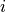 and at lag 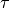.
path_val_matrixcontains the corresponding path coefficients andpath_node_arraythe MCE values.tsg_path_val_matrixcontains the corresponding values in the time series graph format.Parameters: - i (int) – Index of cause variable.
- tau (int) – Lag of cause variable.
- j (int) – Index of effect variable.
- include_neighbors (bool, optional (default: False)) – Whether to include causal paths emanating from neighbors of i
Returns: graph_data – Dictionary of matrices for coloring mediation graph plots.
Return type: dictionary
-
get_tsg(link_matrix, val_matrix=None, include_neighbors=False)[source]¶ Returns time series graph matrix.
Constructs a matrix of shape (N*tau_max, N*tau_max) from link_matrix. This matrix can be used for plotting the time series graph and analyzing causal pathways.
- link_matrix : bool array-like, optional (default: None)
- Matrix of significant links. Must be of same shape as val_matrix. Either sig_thres or link_matrix has to be provided.
- val_matrix : array_like
- Matrix of shape (N, N, tau_max+1) containing test statistic values.
- include_neighbors : bool, optional (default: False)
- Whether to include causal paths emanating from neighbors of i
Returns: tsg – Time series graph matrix. Return type: array of shape (N*tau_max, N*tau_max)
-
get_val_matrix()[source]¶ Returns the matrix of linear coefficients.
Format is val_matrix[i, j, tau] denotes coefficient of link i –tau–> j.
Returns: val_matrix – Matrix of linear coefficients, shape (N, N, tau_max + 1). Return type: array
-
class
tigramite.models.Prediction(dataframe, train_indices, test_indices, prediction_model, prediction_model_params=None, cond_ind_model=None, cond_ind_params=None, data_transform=None, missing_flag=None, verbosity=0)[source]¶ Prediction class for time series models.
Allows to fit and predict from any sklearn model. The optimal predictors can be estimated using PCMCI. Also takes care of missing values, masking and preprocessing.
Parameters: - dataframe (data object) – Tigramite dataframe object. It must have the attributes dataframe.values yielding a numpy array of shape (observations T, variables N) and optionally a mask of the same shape and a missing values flag.
- train_indices (array-like) – Either boolean array or time indices marking the training data.
- test_indices (array-like) – Either boolean array or time indices marking the test data.
- prediction_model (sklearn model object) – For example, sklearn.linear_model.LinearRegression for a linear regression model.
- prediction_model_params (dictionary, optional (default: None)) – Optional parameters passed on to sklearn model
- cond_ind_model (Conditional independence test class object, optional) – Only needed if predictors are estimated with causal algorithm. The class will be initialized with masking set to the training data. Further parameters can be supplied by cond_ind_params.
- cond_ind_params (dictionary, optional) – Parameters for conditional independence test.
- data_transform (sklearn preprocessing object, optional (default: None)) – Used to transform data prior to fitting. For example, sklearn.preprocessing.StandardScaler for simple standardization. The fitted parameters are stored.
- missing_flag (number, optional (default: None)) – Flag for missing values. Dismisses all time slices of samples where missing values occur in any variable and also flags samples for all lags up to 2*tau_max. This avoids biases, see section on masking in Supplement of [1].
- verbosity (int, optional (default: 0)) – Level of verbosity.
-
fit(target_predictors, selected_targets=None, tau_max=None, return_data=False)[source]¶ Fit time series model.
Wrapper around
Models.get_fit(). To each variable inselected_targets, the sklearn model is fitted with given by the target variable, and given by its predictors. The
fitted model class is returned for later use.Parameters: - target_predictors (dictionary) – Dictionary of form {0:[(0, -1), (3, -2), ...], 1:[], ...} containing the predictors estimated with PCMCI.
- selected_targets (list of integers, optional (default: range(N))) – Specify to fit model only for selected targets. If None is passed, models are estimated for all variables.
- tau_max (int, optional (default: None)) – Maximum time lag. If None, the maximum lag in target_predictors is used.
- return_data (bool, optional (default: False)) – Whether to save the data array.
Returns: self
Return type: instance of self
-
get_predictors(selected_targets=None, selected_links=None, steps_ahead=1, tau_max=1, pc_alpha=0.2, max_conds_dim=None, max_combinations=1)[source]¶ Estimate predictors using PC1 algorithm.
Wrapper around PCMCI.run_pc_stable that estimates causal predictors. The lead time can be specified by
steps_ahead.Parameters: - selected_targets (list of ints, optional (default: None)) – List of variables to estimate predictors of. If None, predictors of all variables are estimated.
- selected_links (dict or None) – Dictionary of form {0:[(0, -1), (3, -2), ...], 1:[], ...} specifying whether only selected links should be tested. If None is passed, all links are tested
- steps_ahead (int, default: 1) – Minimum time lag to test. Useful for multi-step ahead predictions.
- tau_max (int, default: 1) – Maximum time lag. Must be larger or equal to tau_min.
- pc_alpha (float or list of floats, default: 0.2) – Significance level in algorithm. If a list or None is passed, the pc_alpha level is optimized for every variable across the given pc_alpha values using the score computed in cond_ind_test.get_model_selection_criterion()
- max_conds_dim (int or None) – Maximum number of conditions to test. If None is passed, this number is unrestricted.
- max_combinations (int, default: 1) – Maximum number of combinations of conditions of current cardinality to test. Defaults to 1 for PC_1 algorithm. For original PC algorithm a larger number, such as 10, can be used.
Returns: predictors – Dictionary of form {0:[(0, -1), (3, -2), ...], 1:[], ...} containing estimated predictors.
Return type: dict
-
predict(target, new_data=None, pred_params=None, cut_off='max_lag_or_tau_max')[source]¶ Predict target variable with fitted model.
Uses the model.predict() function of the sklearn model.
Parameters: - target (int) – Index of target variable.
- new_data (data object, optional) – New Tigramite dataframe object with optional new mask.
- pred_params (dict, optional) – Optional parameters passed on to sklearn prediction function.
- cut_off ({'2xtau_max', 'max_lag', 'max_lag_or_tau_max'}) – How many samples to cutoff at the beginning. The default is ‘2xtau_max’, which guarantees that MCI tests are all conducted on the same samples. For modeling, ‘max_lag_or_tau_max’ can be used, which uses the maximum of tau_max and the conditions, which is useful to compare multiple models on the same sample. Last, ‘max_lag’ uses as much samples as possible.
Returns: Return type: Results from prediction.
tigramite.plotting: Plotting functions¶
Tigramite plotting package.
-
tigramite.plotting.plot_graph(val_matrix, var_names=None, fig_ax=None, figsize=None, sig_thres=None, link_matrix=None, save_name=None, link_colorbar_label='MCI', node_colorbar_label='auto-MCI', link_width=None, link_attribute=None, node_pos=None, arrow_linewidth=30.0, vmin_edges=-1, vmax_edges=1.0, edge_ticks=0.4, cmap_edges='RdBu_r', vmin_nodes=0, vmax_nodes=1.0, node_ticks=0.4, cmap_nodes='OrRd', node_size=20, arrowhead_size=20, curved_radius=0.2, label_fontsize=10, alpha=1.0, node_label_size=10, link_label_fontsize=6, lag_array=None, network_lower_bound=0.2, show_colorbar=True)[source]¶ Creates a network plot.
This is still in beta. The network is defined either from True values in link_matrix, or from thresholding the val_matrix with sig_thres. Nodes denote variables, straight links contemporaneous dependencies and curved arrows lagged dependencies. The node color denotes the maximal absolute auto-dependency and the link color the value at the lag with maximal absolute cross-dependency. The link label lists the lags with significant dependency in order of absolute magnitude. The network can also be plotted over a map drawn before on the same axis. Then the node positions can be supplied in appropriate axis coordinates via node_pos.
Parameters: - val_matrix (array_like) – Matrix of shape (N, N, tau_max+1) containing test statistic values.
- var_names (list, optional (default: None)) – List of variable names. If None, range(N) is used.
- fig_ax (tuple of figure and axis object, optional (default: None)) – Figure and axes instance. If None they are created.
- figsize (tuple) – Size of figure.
- sig_thres (array-like, optional (default: None)) – Matrix of significance thresholds. Must be of same shape as val_matrix. Either sig_thres or link_matrix has to be provided.
- link_matrix (bool array-like, optional (default: None)) – Matrix of significant links. Must be of same shape as val_matrix. Either sig_thres or link_matrix has to be provided.
- save_name (str, optional (default: None)) – Name of figure file to save figure. If None, figure is shown in window.
- link_colorbar_label (str, optional (default: 'MCI')) – Test statistic label.
- node_colorbar_label (str, optional (default: 'auto-MCI')) – Test statistic label for auto-dependencies.
- link_width (array-like, optional (default: None)) – Array of val_matrix.shape specifying relative link width with maximum given by arrow_linewidth. If None, all links have same width.
- link_attribute (array-like, optional (default: None)) – String array of val_matrix.shape specifying link attributes.
- node_pos (dictionary, optional (default: None)) – Dictionary of node positions in axis coordinates of form node_pos = {‘x’:array of shape (N,), ‘y’:array of shape(N)}. These coordinates could have been transformed before for basemap plots.
- arrow_linewidth (float, optional (default: 30)) – Linewidth.
- vmin_edges (float, optional (default: -1)) – Link colorbar scale lower bound.
- vmax_edges (float, optional (default: 1)) – Link colorbar scale upper bound.
- edge_ticks (float, optional (default: 0.4)) – Link tick mark interval.
- cmap_edges (str, optional (default: 'RdBu_r')) – Colormap for links.
- vmin_nodes (float, optional (default: 0)) – Node colorbar scale lower bound.
- vmax_nodes (float, optional (default: 1)) – Node colorbar scale upper bound.
- node_ticks (float, optional (default: 0.4)) – Node tick mark interval.
- cmap_nodes (str, optional (default: 'OrRd')) – Colormap for links.
- node_size (int, optional (default: 20)) – Node size.
- arrowhead_size (int, optional (default: 20)) – Size of link arrow head. Passed on to FancyArrowPatch object.
- float, optional (default (curved_radius,) – Curvature of links. Passed on to FancyArrowPatch object.
- label_fontsize (int, optional (default: 10)) – Fontsize of colorbar labels.
- alpha (float, optional (default: 1.)) – Opacity.
- node_label_size (int, optional (default: 10)) – Fontsize of node labels.
- link_label_fontsize (int, optional (default: 6)) – Fontsize of link labels.
- lag_array (array, optional (default: None)) – Optional specification of lags overwriting numpy.arange(0, tau_max+1)
- network_lower_bound (float, optional (default: 0.2)) – Fraction of vertical space below graph plot.
- show_colorbar (bool) – Whether to show colorbars for links and nodes.
-
tigramite.plotting.plot_lagfuncs(val_matrix, name=None, setup_args={}, add_lagfunc_args={})[source]¶ Wrapper helper function to plot lag functions.
Sets up the matrix object and plots the lagfunction, see parameters in setup_matrix and add_lagfuncs.
Parameters: - val_matrix (array_like) – Matrix of shape (N, N, tau_max+1) containing test statistic values.
- name (str, optional (default: None)) – File name. If None, figure is shown in window.
- setup_args (dict) – Arguments for setting up the lag function matrix, see doc of setup_matrix.
- add_lagfunc_args (dict) – Arguments for adding a lag function matrix, see doc of add_lagfuncs.
Returns: matrix – Further lag functions can be overlaid using the matrix.add_lagfuncs(val_matrix) function.
Return type: object
-
tigramite.plotting.plot_mediation_graph(path_val_matrix, path_node_array=None, var_names=None, fig_ax=None, figsize=None, save_name=None, link_colorbar_label='link coeff. (edge color)', node_colorbar_label='MCE (node color)', link_width=None, node_pos=None, arrow_linewidth=30.0, vmin_edges=-1, vmax_edges=1.0, edge_ticks=0.4, cmap_edges='RdBu_r', vmin_nodes=-1.0, vmax_nodes=1.0, node_ticks=0.4, cmap_nodes='RdBu_r', node_size=20, arrowhead_size=20, curved_radius=0.2, label_fontsize=10, lag_array=None, alpha=1.0, node_label_size=10, link_label_fontsize=6, network_lower_bound=0.2)[source]¶ Creates a network plot visualizing the pathways of a mediation analysis.
This is still in beta. The network is defined from non-zero entries in
path_val_matrix. Nodes denote variables, straight links contemporaneous dependencies and curved arrows lagged dependencies. The node color denotes the mediated causal effect (MCE) and the link color the value at the lag with maximal link coefficient. The link label lists the lags with significant dependency in order of absolute magnitude. The network can also be plotted over a map drawn before on the same axis. Then the node positions can be supplied in appropriate axis coordinates via node_pos.Parameters: - path_val_matrix (array_like) – Matrix of shape (N, N, tau_max+1) containing link weight values.
- path_node_array (array_like) – Array of shape (N,) containing node values.
- var_names (list, optional (default: None)) – List of variable names. If None, range(N) is used.
- fig_ax (tuple of figure and axis object, optional (default: None)) – Figure and axes instance. If None they are created.
- figsize (tuple) – Size of figure.
- save_name (str, optional (default: None)) – Name of figure file to save figure. If None, figure is shown in window.
- link_colorbar_label (str, optional (default: 'link coeff. (edge color)')) – Link colorbar label.
- node_colorbar_label (str, optional (default: 'MCE (node color)')) – Node colorbar label.
- link_width (array-like, optional (default: None)) – Array of val_matrix.shape specifying relative link width with maximum given by arrow_linewidth. If None, all links have same width.
- node_pos (dictionary, optional (default: None)) – Dictionary of node positions in axis coordinates of form node_pos = {‘x’:array of shape (N,), ‘y’:array of shape(N)}. These coordinates could have been transformed before for basemap plots.
- arrow_linewidth (float, optional (default: 30)) – Linewidth.
- vmin_edges (float, optional (default: -1)) – Link colorbar scale lower bound.
- vmax_edges (float, optional (default: 1)) – Link colorbar scale upper bound.
- edge_ticks (float, optional (default: 0.4)) – Link tick mark interval.
- cmap_edges (str, optional (default: 'RdBu_r')) – Colormap for links.
- vmin_nodes (float, optional (default: 0)) – Node colorbar scale lower bound.
- vmax_nodes (float, optional (default: 1)) – Node colorbar scale upper bound.
- node_ticks (float, optional (default: 0.4)) – Node tick mark interval.
- cmap_nodes (str, optional (default: 'OrRd')) – Colormap for links.
- node_size (int, optional (default: 20)) – Node size.
- arrowhead_size (int, optional (default: 20)) – Size of link arrow head. Passed on to FancyArrowPatch object.
- float, optional (default (curved_radius,) – Curvature of links. Passed on to FancyArrowPatch object.
- label_fontsize (int, optional (default: 10)) – Fontsize of colorbar labels.
- alpha (float, optional (default: 1.)) – Opacity.
- node_label_size (int, optional (default: 10)) – Fontsize of node labels.
- link_label_fontsize (int, optional (default: 6)) – Fontsize of link labels.
- network_lower_bound (float, optional (default: 0.2)) – Fraction of vertical space below graph plot.
- lag_array (array, optional (default: None)) – Optional specification of lags overwriting numpy.arange(0, tau_max+1)
-
tigramite.plotting.plot_mediation_time_series_graph(path_node_array, tsg_path_val_matrix, var_names=None, fig_ax=None, figsize=None, link_colorbar_label='link coeff. (edge color)', node_colorbar_label='MCE (node color)', save_name=None, link_width=None, arrow_linewidth=20.0, vmin_edges=-1, vmax_edges=1.0, edge_ticks=0.4, cmap_edges='RdBu_r', order=None, vmin_nodes=-1.0, vmax_nodes=1.0, node_ticks=0.4, cmap_nodes='RdBu_r', node_size=10, arrowhead_size=20, curved_radius=0.2, label_fontsize=10, alpha=1.0, node_label_size=10, label_space_left=0.1, label_space_top=0.0, network_lower_bound=0.2)[source]¶ Creates a mediation time series graph plot.
This is still in beta. The time series graph’s links are colored by val_matrix.
Parameters: - tsg_path_val_matrix (array_like) – Matrix of shape (N*tau_max, N*tau_max) containing link weight values.
- path_node_array (array_like) – Array of shape (N,) containing node values.
- var_names (list, optional (default: None)) – List of variable names. If None, range(N) is used.
- fig_ax (tuple of figure and axis object, optional (default: None)) – Figure and axes instance. If None they are created.
- figsize (tuple) – Size of figure.
- save_name (str, optional (default: None)) – Name of figure file to save figure. If None, figure is shown in window.
- link_colorbar_label (str, optional (default: 'link coeff. (edge color)')) – Link colorbar label.
- node_colorbar_label (str, optional (default: 'MCE (node color)')) – Node colorbar label.
- link_width (array-like, optional (default: None)) – Array of val_matrix.shape specifying relative link width with maximum given by arrow_linewidth. If None, all links have same width.
- order (list, optional (default: None)) – order of variables from top to bottom.
- arrow_linewidth (float, optional (default: 30)) – Linewidth.
- vmin_edges (float, optional (default: -1)) – Link colorbar scale lower bound.
- vmax_edges (float, optional (default: 1)) – Link colorbar scale upper bound.
- edge_ticks (float, optional (default: 0.4)) – Link tick mark interval.
- cmap_edges (str, optional (default: 'RdBu_r')) – Colormap for links.
- vmin_nodes (float, optional (default: 0)) – Node colorbar scale lower bound.
- vmax_nodes (float, optional (default: 1)) – Node colorbar scale upper bound.
- node_ticks (float, optional (default: 0.4)) – Node tick mark interval.
- cmap_nodes (str, optional (default: 'OrRd')) – Colormap for links.
- node_size (int, optional (default: 20)) – Node size.
- arrowhead_size (int, optional (default: 20)) – Size of link arrow head. Passed on to FancyArrowPatch object.
- float, optional (default (curved_radius,) – Curvature of links. Passed on to FancyArrowPatch object.
- label_fontsize (int, optional (default: 10)) – Fontsize of colorbar labels.
- alpha (float, optional (default: 1.)) – Opacity.
- node_label_size (int, optional (default: 10)) – Fontsize of node labels.
- link_label_fontsize (int, optional (default: 6)) – Fontsize of link labels.
- label_space_left (float, optional (default: 0.1)) – Fraction of horizontal figure space to allocate left of plot for labels.
- label_space_top (float, optional (default: 0.)) – Fraction of vertical figure space to allocate top of plot for labels.
- network_lower_bound (float, optional (default: 0.2)) – Fraction of vertical space below graph plot.
-
tigramite.plotting.plot_time_series_graph(val_matrix, var_names=None, fig_ax=None, figsize=None, sig_thres=None, link_matrix=None, link_colorbar_label='MCI', save_name=None, link_width=None, arrow_linewidth=20.0, vmin_edges=-1, vmax_edges=1.0, edge_ticks=0.4, cmap_edges='RdBu_r', order=None, node_size=10, arrowhead_size=20, curved_radius=0.2, label_fontsize=10, alpha=1.0, node_label_size=10, label_space_left=0.1, label_space_top=0.0, network_lower_bound=0.2)[source]¶ Creates a time series graph.
This is still in beta. The time series graph’s links are colored by val_matrix.
Parameters: - val_matrix (array_like) – Matrix of shape (N, N, tau_max+1) containing test statistic values.
- var_names (list, optional (default: None)) – List of variable names. If None, range(N) is used.
- fig_ax (tuple of figure and axis object, optional (default: None)) – Figure and axes instance. If None they are created.
- figsize (tuple) – Size of figure.
- sig_thres (array-like, optional (default: None)) – Matrix of significance thresholds. Must be of same shape as val_matrix. Either sig_thres or link_matrix has to be provided.
- link_matrix (bool array-like, optional (default: None)) – Matrix of significant links. Must be of same shape as val_matrix. Either sig_thres or link_matrix has to be provided.
- save_name (str, optional (default: None)) – Name of figure file to save figure. If None, figure is shown in window.
- link_colorbar_label (str, optional (default: 'MCI')) – Test statistic label.
- link_width (array-like, optional (default: None)) – Array of val_matrix.shape specifying relative link width with maximum given by arrow_linewidth. If None, all links have same width.
- order (list, optional (default: None)) –
- of variables from top to bottom. (order) –
- arrow_linewidth (float, optional (default: 30)) – Linewidth.
- vmin_edges (float, optional (default: -1)) – Link colorbar scale lower bound.
- vmax_edges (float, optional (default: 1)) – Link colorbar scale upper bound.
- edge_ticks (float, optional (default: 0.4)) – Link tick mark interval.
- cmap_edges (str, optional (default: 'RdBu_r')) – Colormap for links.
- node_size (int, optional (default: 20)) – Node size.
- arrowhead_size (int, optional (default: 20)) – Size of link arrow head. Passed on to FancyArrowPatch object.
- float, optional (default (curved_radius,) – Curvature of links. Passed on to FancyArrowPatch object.
- label_fontsize (int, optional (default: 10)) – Fontsize of colorbar labels.
- alpha (float, optional (default: 1.)) – Opacity.
- node_label_size (int, optional (default: 10)) – Fontsize of node labels.
- link_label_fontsize (int, optional (default: 6)) – Fontsize of link labels.
- label_space_left (float, optional (default: 0.1)) – Fraction of horizontal figure space to allocate left of plot for labels.
- label_space_top (float, optional (default: 0.)) – Fraction of vertical figure space to allocate top of plot for labels.
- network_lower_bound (float, optional (default: 0.2)) – Fraction of vertical space below graph plot.
-
tigramite.plotting.plot_timeseries(data, datatime=None, var_names=None, save_name=None, fig_axes=None, figsize=None, var_units=None, time_label='time', use_mask=False, mask=None, missing_flag=None, grey_masked_samples=False, data_linewidth=1.0, skip_ticks_data_x=1, skip_ticks_data_y=2, label_fontsize=8)[source]¶ Create and save figure of stacked panels with time series.
Parameters: - data (array-like) – Data series array of shape (T, N).
- datatime (array-like, optional (default: None)) – Timelabel array. If None, range(T) is used.
- var_names (list, optional (default: None)) – List of variable names. If None, range(N) is used.
- save_name (str, optional (default: None)) – Name of figure file to save figure. If None, figure is shown in window.
- fig_axes (subplots instance, optional (default: None)) – Figure and axes instance. If None they are created as fig, axes = pyplot.subplots(N,...)
- figsize (tuple of floats, optional (default: None)) – Figure size if new figure is created. If None, default pyplot figsize is used.
- var_units (list of str, optional (default: None)) – Units of variables.
- time_label (str, optional (default: '')) – Label of time axis.
- use_mask (bool, optional (default: False)) – Whether to use masked data.
- mask (array-like, optional (default: None)) – Data mask where True labels masked samples.
- missing_flag (number, optional (default: None)) – Flag for missing values in dataframe. Dismisses all time slices of samples where missing values occur in any variable and also flags samples for all lags up to 2*tau_max. This avoids biases, see section on masking in Supplement of [1].
- grey_masked_samples (bool, optional (default: False)) – Whether to mark masked samples by grey fills (‘fill’) or grey data (‘data’).
- data_linewidth (float, optional (default: 1.)) – Linewidth.
- skip_ticks_data_x (int, optional (default: 1)) – Skip every other tickmark.
- skip_ticks_data_y (int, optional (default: 2)) – Skip every other tickmark.
- label_fontsize (int, optional (default: 10)) – Fontsize of variable labels.
-
class
tigramite.plotting.setup_matrix(N, tau_max, var_names=None, figsize=None, minimum=-1, maximum=1, label_space_left=0.1, label_space_top=0.05, legend_width=0.15, legend_fontsize=10, x_base=1.0, y_base=0.5, plot_gridlines=False, lag_units='', lag_array=None, label_fontsize=10)[source]¶ Create matrix of lag function panels.
Class to setup figure object. The function add_lagfuncs(...) allows to plot the val_matrix of shape (N, N, tau_max+1). Multiple lagfunctions can be overlaid for comparison.
Parameters: - N (int) – Number of variables
- tau_max (int) – Maximum time lag.
- var_names (list, optional (default: None)) – List of variable names. If None, range(N) is used.
- figsize (tuple of floats, optional (default: None)) – Figure size if new figure is created. If None, default pyplot figsize is used.
- minimum (int, optional (default: -1)) – Lower y-axis limit.
- maximum (int, optional (default: 1)) – Upper y-axis limit.
- label_space_left (float, optional (default: 0.1)) – Fraction of horizontal figure space to allocate left of plot for labels.
- label_space_top (float, optional (default: 0.05)) – Fraction of vertical figure space to allocate top of plot for labels.
- legend_width (float, optional (default: 0.15)) – Fraction of horizontal figure space to allocate right of plot for legend.
- x_base (float, optional (default: 1.)) – x-tick intervals to show.
- y_base (float, optional (default: .4)) – y-tick intervals to show.
- plot_gridlines (bool, optional (default: False)) – Whether to show a grid.
- lag_units (str, optional (default: '')) –
- lag_array (array, optional (default: None)) – Optional specification of lags overwriting numpy.arange(0, tau_max+1)
- label_fontsize (int, optional (default: 10)) – Fontsize of variable labels.
-
add_lagfuncs(val_matrix, sig_thres=None, conf_matrix=None, color='black', label=None, two_sided_thres=True, marker='.', markersize=5, alpha=1.0)[source]¶ Add lag function plot from val_matrix array.
Parameters: - val_matrix (array_like) – Matrix of shape (N, N, tau_max+1) containing test statistic values.
- sig_thres (array-like, optional (default: None)) – Matrix of significance thresholds. Must be of same shape as val_matrix.
- conf_matrix (array-like, optional (default: None)) – Matrix of shape (, N, tau_max+1, 2) containing confidence bounds.
- color (str, optional (default: 'black')) – Line color.
- label (str) – Test statistic label.
- two_sided_thres (bool, optional (default: True)) – Whether to draw sig_thres for pos. and neg. values.
- marker (matplotlib marker symbol, optional (default: '.')) – Marker.
- markersize (int, optional (default: 5)) – Marker size.
- alpha (float, optional (default: 1.)) – Opacity.